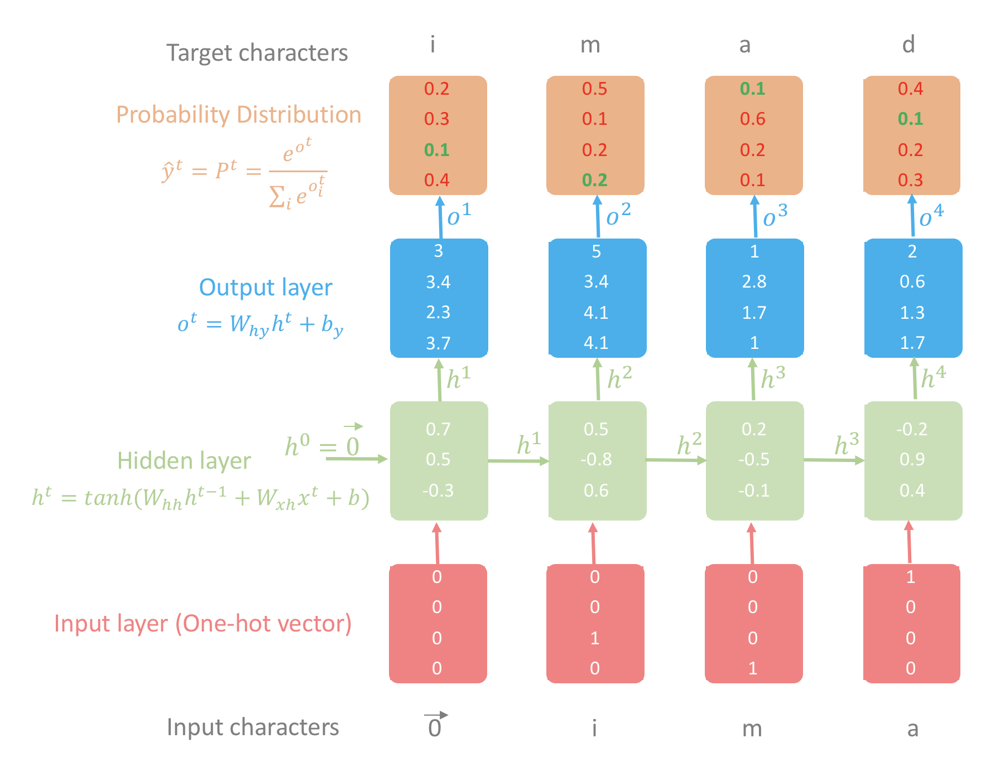
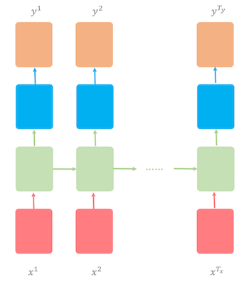
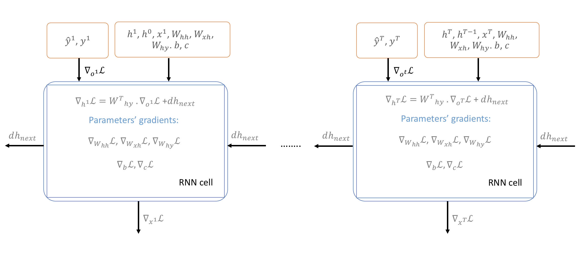

Predict the next character given the previous charecter and state.
NLP
Deep Learning
Author
Imad Dabbura
Published
February 22, 2018
Introduction
Have you ever wondered how Gmail automatic reply works? Or how a Neural Network can generate musical notes? The general way of generating sequence of text is to train a model to predict the next word/character given all previous words/characters. Such model is called Statistical Language Model. So what is a statistical language model? A statistical language model tries to capture the statistical structure (latent space) of training text it’s trained on. Usually Recurrent Neural Network (RNN) models family is used to train the model due to the fact that it’s very powerful and expressive in which they remember and process past information through their high dimensional hidden state units. The main goal of any language model is to learn the joint probability distribution of sequences of characters/words in a training text, i.e. trying to learn the joint probability function. For example, if we’re trying to predict a sequence of \(T\) words, we try to get the joint probability \(P(w_1, w_2, ..., w_T)\) as big as we can which is equal to the product of all conditional probabilities \(\prod_{t = 1}^T P(w_t/w_{t-1})\) at all time steps (t).
In this notebook, we’ll cover Character-level Language Model where almost all the concepts hold for any other language models such as word-language models. The main task of character-level language model is to predict next character given all previous characters in a sequence of data, i.e. generate text character by character. More formally, given a training sequence \((x^1, ... , x^T)\), the RNN uses the sequence of its output vectors \((o^1, ... , o^T)\) to obtain a sequence of predictive distributions \(P(x^t|x^{<t}) = softmax(o^t)\).
Let’s illustrate how the character-level language model works using my first name (“imad”) as an example (see figure 1 for all the details of this example). 1. We first build a vocabulary dictionary using all the unique letters of the names in the corpus as keys and the index of each letter starting from zero (since python is a zero-index language) in ascending order. For our example, the vocabulary dictionary would be: {“a”: 0, “d”: 1, “i”: 2, “m”: 3}. Therefore, “imad” would become a list of the following integers: [2, 3, 0, 1]. 2. Convert the input and the output characters to lists of integers using the vocabulary dictionary. In this notebook, we’ll assume that \(x^1 = \vec{0}\) for all examples. Therefore, \(y = "imad"\) and \(x = \vec{0}\ + "ima"\). In other words, \(x^{t + 1} = y^t\) which gives us: \(y = [2, 3, 0, 1]\) and \(x = [\vec{0}, 2, 3, 0]\). 3. For each character in the input: 1. Convert the input characters into one-hot vectors. Notice how the first character \(x^1 = \vec{0}\). 2. Compute the hidden state layer. 3. Compute the output layer and then pass it through softmax to get the results as probabilities. 4. Feed the target character at time step (t) as the input character at time step \((t + 1)\). 5. Go back to step A and repeat until we finish all the letters in the name.
The objective is to make the green numbers as big as we can and the red numbers as small as we can in the probability distribution layer. The reason for that is that the true index should have the highest probability by making it as close as we can to 1. The way to do that is to measure the loss using cross-entropy and then compute the gradients of the loss w.r.t. all parameters to update them in the opposite of the gradient direction. Repeating the process over many times where each time we adjust the parameters based on the gradient direction –> model will be able to correctly predict next characters given all previous one using all names in the training text. Notice that hidden state \(h^4\) has all past information about all characters.

Figure 1: Illustrative example of character-level language model using RNN
Training
The dataset we’ll be using has 5,163 names: 4,275 male names, 1,219 female names, and 331 names that can be both female and male names. The RNN architecture we’ll be using to train the character-level language model is called many to many where time steps of the input \((T_x)\) = time steps of the output \((T_y)\). In other words, the sequence of the input and output are synced (see figure 2).

Figure 2: RNN architecture: many to many
The character-level language model will be trained on names; which means after we’re done with training the model, we’ll be able to generate interesting names :).
In this section, we’ll go over four main parts:
Forward propagation.
Backpropagation
Sampling
Fitting the model
Forward Propagation
We’ll be using Stochastic Gradient Descent (SGD) where each batch consists of only one example. In other words, the RNN model will learn from each example (name) separately, i.e. run both forward and backward passes on each example and update parameters accordingly. Below are all the steps needed for a forward pass: - Create a vocabulary dictionary using the unique lower case letters. - Create a character to index dictionary that maps each character to its corresponding index in an ascending order. For example, “a” would have index 1 (since python is a zero index language and we’ll reserve 0 index to EOS “”) and “z” would have index 26. We will use this dictionary in converting names into lists of integers where each letter will be represented as one-hot vector. - Create an index to character dictionary that maps indices to characters. This dictionary will be used to convert the output of the RNN model into characters which will be translated into names. - Initialize parameters: weights will be initialized to small random numbers from standard normal distribution to break symmetry and make sure different hidden units learn different things. On the other hand, biases will be initialized to zeros. - \(W_{hh}\): weight matrix connecting previous hidden state \(h^{t - 1}\) to current hidden state \(h^t\). - \(W_{xh}\): weight matrix connecting input \(x^t\) to hidden state \(h^t\). - \(b\): hidden state bias vector. - \(W_{hy}\): weight matrix connecting hidden state \(h^t\) to output \(o^t\). - \(c\): output bias vector. - Convert input \(x^t\) and output \(y^t\) into one-hot vector each. The dimension of the one-hot vector is vocab_size x 1. Everything will be zero except for the index of the letter at (t) would be 1. In our case, \(x^t\) would be the same as \(y^t\) shifted to the left where \(x^1 = \vec{0}\); however, starting from \(t = 2\), \(x^{t + 1} = y^{t}\). For example, if we use “imad” as the input, then \(y = [3, 4, 1, 2, 0]\) while \(x = [\vec{0}, 3, 4, 1, 2]\). Notice that \(x^1 = \vec{0}\) and not the index 0. Moreover, we’re using “” as EOS (end of sentence/name) for each name so that the RNN learns “” as any other character so that it knows when to stop generating characters. Therefore, the last target character for all names will be “” that represents the end of the name. - Compute the hidden state using the following formula: \[h^t = tanh(W_{hh}h^{t-1} + W_{xh}x^t + b)\tag{1}\\{}\] Notice that we use hyperbolic tangent \((\frac{e^x - e^{-x}}{e^x + e^{-x}})\) as the non-linear function. One of the main advantages of the hyperbolic tangent function is that it resembles the identity function. - Compute the output layer using the following formula: \[o^t = W_{hy}h^{t} + c\tag{2}\\{}\] - Pass the output through softmax layer to normalize the output that allows us to express it as a probability, i.e. all output will be between 0 and 1 and sum up to 1. Below is the softmax formula: \[y^t = \frac{e^{o^t}}{\sum_ie^{o^t}}\tag{3}\\{}\] The softmax layer has the same dimension as the output layer which is vocab_size x 1. As a result, \(y^t[i]\) is the probability of of index \(i\) being the next character at time step (t). - As mentioned before, the objective of a character-level language model is to minimize the negative log-likelihood of the training sequence. Therefore, the loss function at time (t) and the total loss across all time steps are: \[\mathcal{L}^t = -\sum_{i = 1}^{T_y}y^tlog\widehat{y^t}\tag{4}\\{}\]\[\mathcal{L} = \sum_{t = 1}^{T_y}\mathcal{L}^t(\widehat{y^t}, y^t)\tag{5}\] Since we’ll be using SGD, the loss will be noisy and have many oscillations, so it’s a good practice to smooth out the loss using exponential weighted average. - Pass the target character \(y^t\) as the next input \(x^{t + 1}\) until we finish the sequence.
Code
# Load packages# | warning: falseimport osimport matplotlib.pyplot as pltimport numpy as npimport pandas as pdimport seaborn as snsos.chdir("../scripts/")from character_level_language_model import ( initialize_parameters, initialize_rmsprop, softmax, smooth_loss, update_parameters_with_rmsprop,)%matplotlib inlinesns.set_context("notebook")plt.style.use("fivethirtyeight")
Code
def rnn_forward(x, y, h_prev, parameters):""" Implement one Forward pass on one name. Arguments --------- x : list list of integers for the index of the characters in the example shifted one character to the right. y : list list of integers for the index of the characters in the example. h_prev : array last hidden state from the previous example. parameters : python dict dictionary containing the parameters. Returns ------- loss : float cross-entropy loss. cache : tuple contains three python dictionaries: xs -- input of all time steps. hs -- hidden state of all time steps. probs -- probability distribution of each character at each time step. """# Retrieve parameters Wxh, Whh, b = parameters["Wxh"], parameters["Whh"], parameters["b"] Why, c = parameters["Why"], parameters["c"]# Initialize inputs, hidden state, output, and probabilities dictionaries xs, hs, os, probs = {}, {}, {}, {}# Initialize x0 to zero vector xs[0] = np.zeros((vocab_size, 1))# Initialize loss and assigns h_prev to last hidden state in hs loss =0 hs[-1] = np.copy(h_prev)# Forward pass: loop over all characters of the namefor t inrange(len(x)):# Convert to one-hot vectorif t >0: xs[t] = np.zeros((vocab_size, 1)) xs[t][x[t]] =1# Hidden state hs[t] = np.tanh(np.dot(Wxh, xs[t]) + np.dot(Whh, hs[t -1]) + b)# Logits os[t] = np.dot(Why, hs[t]) + c# Probs probs[t] = softmax(os[t])# Loss loss -= np.log(probs[t][y[t], 0]) cache = (xs, hs, probs)return loss, cache
Backpropagation
With RNN based models, the gradient-based technique that will be used is called Backpropagation Through Time (BPTT). We start at last time step \(T\) and backpropagate loss function w.r.t. all parameters across all time steps and sum them up (see figure 3).

Figure 3: Backpropagation Through Time (BPTT)
In addition, since recurrent networks are known to have steep cliffs (sudden steep decrease in \(\mathcal{L}\)), gradients may overshoot the minimum and undo a lot of the work that was done even if we are using adaptive learning methods such as RMSProp. The reason for that is that because gradient is a linear approximation of the loss function and may not capture information further than the point it was evaluated on such as the curvature of loss curve. Therefore, it’s a common practice to clip the gradients to be in the interval [-maxValue, maxValue]. For this exercise, we’ll clip the gradients to be in the interval [-5, 5]. That means if the gradient is > 5 or < -5, it would be clipped to 5 and -5 respectively. Below are all the formulas needed to compute the gradients w.r.t. all parameters at all time steps.
Note that at last time step \(T\), we’ll initialize \(dh_{next}\) to zeros since we can’t get values from future. To stabilize the update at each time step since SGD may have so many oscillations, we’ll be using one of the adaptive learning methods’ optimizer. More specifically, Root Mean Squared Propagation (RMSProp) which tends to have acceptable performance.
Code
def clip_gradients(gradients, max_value):""" Implements gradient clipping element-wise on gradients to be between the interval [-max_value, max_value]. Arguments ---------- gradients : python dict dictionary that stores all the gradients. max_value : scalar edge of the interval [-max_value, max_value]. Returns ------- gradients : python dict dictionary where all gradients were clipped. """for grad in gradients.keys(): np.clip(gradients[grad], -max_value, max_value, out=gradients[grad])return gradientsdef rnn_backward(y, parameters, cache):""" Implements Backpropagation on one name. Arguments --------- y : list list of integers for the index of the characters in the example. parameters : python dict dictionary containing the parameters. cache : tuple contains three python dictionaries: xs -- input of all time steps. hs -- hidden state of all time steps. probs -- probability distribution of each character at each time step. Returns ------- grads : python dict dictionary containing all the gradients. h_prev : array last hidden state from the current example. """# Retrieve xs, hs, and probs xs, hs, probs = cache# Initialize all gradients to zero dh_next = np.zeros_like(hs[0]) parameters_names = ["Whh", "Wxh", "b", "Why", "c"] grads = {}for param_name in parameters_names: grads["d"+ param_name] = np.zeros_like(parameters[param_name])# Iterate over all time steps in reverse order starting from Txfor t inreversed(range(len(xs))): dy = np.copy(probs[t]) dy[y[t]] -=1 grads["dWhy"] += np.dot(dy, hs[t].T) grads["dc"] += dy dh = np.dot(parameters["Why"].T, dy) + dh_next dhraw = (1- hs[t] **2) * dh grads["dWhh"] += np.dot(dhraw, hs[t -1].T) grads["dWxh"] += np.dot(dhraw, xs[t].T) grads["db"] += dhraw dh_next = np.dot(parameters["Whh"].T, dhraw)# Clip the gradients using [-5, 5] as the interval grads = clip_gradients(grads, 5)# Get the last hidden state h_prev = hs[len(xs) -1]return grads, h_prev
Sampling
Sampling is what makes the text generated by the RNN at each time step an interesting/creative text. On each time step (t), the RNN output the conditional probability distribution of the next character given all the previous characters, i.e. \(P(c_t/c_1, c_2, ..., c_{t-1})\). Let’s assume that we are at time step \(t = 3\) and we’re trying to predict the third character, the conditional probability distribution is: \(P(c_3/c_1, c_2) = (0.2, 0.3, 0.4, 0.1)\). We’ll have two extremes: 1. Maximum entropy: the character will be picked randomly using uniform probability distribution; which means that all characters in the vocabulary dictionary are equally likely. Therefore, we’ll end up with maximum randomness in picking the next character and the generated text will not be either meaningful or sound real. 2. Minimum entropy: the character with the highest conditional probability will be picked on each time step. That means next character will be what the model estimates to be the right one based on the training text and learned parameters. As a result, the name generated will be both meaningful and sound real. However, it will also be repetitive and interesting since all the parameters were optimized to learn joint probability distribution in predicting the next character.
As we increase randomness, text will loose local structure; however, as we decrease randomness, the generated text will sound more real and start to preserve its local structure. For this exercise, we will sample from the distribution that’s generated by the model which can be seen as an intermediate level of randomness between maximum and minimum entropy (see figure 4). Using this sampling strategy on the above distribution, the index 0 has \(20\)% probability of being picked, while index 2 has \(40\)% probability to be picked.
Figure 4: Sampling: An example of predicting next character using character-level language model
Therefore, sampling will be used at test time to generate names character by character.
Code
def sample(parameters, idx_to_chars, chars_to_idx, n):""" Implements sampling of a squence of n characters characters length. The sampling will be based on the probability distribution output of RNN. Arguments --------- parameters : python dict dictionary storing all the parameters of the model. idx_to_chars : python dict dictionary mapping indices to characters. chars_to_idx : python dict dictionary mapping characters to indices. n : scalar number of characters to output. Returns ------- sequence : str sequence of characters sampled. """# Retrienve parameters, shapes, and vocab size Whh, Wxh, b = parameters["Whh"], parameters["Wxh"], parameters["b"] Why, c = parameters["Why"], parameters["c"] n_h, n_x = Wxh.shape vocab_size = c.shape[0]# Initialize a0 and x1 to zero vectors h_prev = np.zeros((n_h, 1)) x = np.zeros((n_x, 1))# Initialize empty sequence indices = [] idx =-1 counter =0while counter <= n and idx != chars_to_idx["\n"]:# Fwd propagation h = np.tanh(np.dot(Whh, h_prev) + np.dot(Wxh, x) + b) o = np.dot(Why, h) + c probs = softmax(o)# Sample the index of the character using generated probs distribution idx = np.random.choice(vocab_size, p=probs.ravel())# Get the character of the sampled index char = idx_to_chars[idx]# Add the char to the sequence indices.append(idx)# Update a_prev and x h_prev = np.copy(h) x = np.zeros((n_x, 1)) x[idx] =1 counter +=1 sequence ="".join([idx_to_chars[idx] for idx in indices if idx !=0])return sequence
Fitting the model
After covering all the concepts/intuitions behind character-level language model, now we’re ready to fit the model. We’ll use the default settings for RMSProp’s hyperparameters and run the model for 100 iterations. On each iteration, we’ll print out one sampled name and smoothed loss to see how the names generated start to get more interesting with more iterations as well as the loss will start decreasing. When done with fitting the model, we’ll plot the loss function and generate some names.
Code
def model( file_path, chars_to_idx, idx_to_chars, hidden_layer_size, vocab_size, num_epochs=10, learning_rate=0.01,):""" Implements RNN to generate characters. Arguments --------- file_path : str path to the file of the raw data. num_epochs : int number of passes the optimization algorithm to go over the training data. learning_rate : float step size of learning. chars_to_idx : python dict dictionary mapping characters to indices. idx_to_chars : python dict dictionary mapping indices to characters. hidden_layer_size : int number of hidden units in the hidden layer. vocab_size : int size of vocabulary dictionary. Returns ------- parameters : python dict dictionary storing all the parameters of the model. overall_loss : list list stores smoothed loss per epoch. """# Get the datawithopen(file_path) as f: data = f.readlines() examples = [x.lower().strip() for x in data]# Initialize parameters parameters = initialize_parameters(vocab_size, hidden_layer_size)# Initialize Adam parameters s = initialize_rmsprop(parameters)# Initialize loss smoothed_loss =-np.log(1/ vocab_size) *7# Initialize hidden state h0 and overall loss h_prev = np.zeros((hidden_layer_size, 1)) overall_loss = []# Iterate over number of epochsfor epoch inrange(num_epochs):# Shuffle examples np.random.shuffle(examples)# Iterate over all examples (SGD)for example in examples: x = [None] + [chars_to_idx[char] for char in example] y = x[1:] + [chars_to_idx["\n"]]# Fwd pass loss, cache = rnn_forward(x, y, h_prev, parameters)# Compute smooth loss smoothed_loss = smooth_loss(smoothed_loss, loss)# Bwd pass grads, h_prev = rnn_backward(y, parameters, cache)# Update parameters parameters, s = update_parameters_with_rmsprop(parameters, grads, s) overall_loss.append(smoothed_loss)if epoch %10==0:print(f"\033[1m\033[94mEpoch {epoch}")print(f"\033[1m\033[92m=======")# Sample one nameprint(f"""Sampled name: {sample(parameters, idx_to_chars, chars_to_idx,10).capitalize()}""" )print(f"Smoothed loss: {smoothed_loss:.4f}\n")return parameters, overall_loss
Code
# Load namesdata =open("../data/names.txt", "r").read()# Convert characters to lower casedata = data.lower()# Construct vocabulary using unique characters, sort it in ascending order,# then construct two dictionaries that maps character to index and index to# characters.chars =list(sorted(set(data)))chars_to_idx = {ch: i for i, ch inenumerate(chars)}idx_to_chars = {i: ch for ch, i in chars_to_idx.items()}# Get the size of the data and vocab sizedata_size =len(data)vocab_size =len(chars_to_idx)print(f"There are {data_size} characters and {vocab_size} unique characters.")# Fitting the modelparameters, loss = model("../data/names.txt", chars_to_idx, idx_to_chars, 10, vocab_size, 50, 0.01)# Plotting the lossplt.plot(range(len(loss)), loss)plt.xlabel("Epochs")plt.ylabel("Smoothed loss")
As you may notice, the names generated started to get more interesting after 15 epochs. One of the interesting names is “Yasira” which is an Arabic name :).
Conclusion
Statistical language models are very crucial in Natural Language Processing (NLP) such as speech recognition and machine translation. We demonstrated in this notebook the main concepts behind statistical language models using character-level language model. The task of this model is generate names character by character using names obtained from census data that were consisted of 5,163 names. Below are the main key takeaways: - If we have more data, bigger model, and train longer we may get more interesting results. However, to get a very interesting results, we should instead use Long Short_Term Memory (LSTM) model with more than one layer deep. People have used 3 layers deep LSTM model with dropout and were able to generate very interesting results when applied on cook books and Shakespeare poems. LSTM models outperform simple RNN due to its ability in capturing longer time dependencies. - With the sampling technique we’re using, don’t expect the RNN to generate meaningful sequence of characters (names). - We used in this notebook each name as its own sequence; however, we may be able to speed up learning and get better results if we increase the batch size lets say from one name to a sequence of 50 characters. - We can control the level of randomness using the sampling strategy. Here, we balanced between what the model thinks its the right character and the level of randomness.